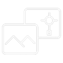
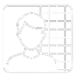
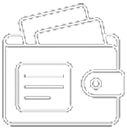

A clickable mockup that goes with docs/plan-beta-and-beyond.md, section 4. It runs in a browser, so it proves nothing about UXP. The notes beside each panel name the UXP rule each choice respects. Each screen becomes its own small PR, one at a time, after the beta, and each waits for a real Photoshop screenshot. Click the cards, links and buttons inside the panels.






Promptsgap. The Exp. chip is 16 px high with an 8 px radius. Icons are the existing src/icons/tools/*.png. The collapsed section uses the hidden attribute. New rules go under .app-shell.theme-compact, or the compact theme's !important rules win. Built from HOME_TOOL_SECTIONS in appConstants.ts, so it is data, not new markup./system_stats (the hardware advisor already reads it). CPU-only machines get the G3 message here.starterKit.ts), with its licence said as "free for client work" rather than "Apache-2.0".hidden. Chips are 20 px high with a 10 px radius. No new host calls: the import is the existing importGeneratedImageAsLayer. The panel cannot open a browser yet (openExternal has never been called), so "Open Getting started" is Copy Link until that spike is done.<select>, so the wheel-proof picker from #140/#141 applies. Option text comes from displayName plus a new lookName field in the registry. The shape control is divs with data-selected, because compact styles any button[aria-pressed] as a gold toggle. The hint is textContent: plain text, no backticks, no --. Pre-beta piece: show displayName instead of the preset id in all 11 Workflow dropdowns (see the plan, item B2).inpaint-lama and inpaint-lama-klein presets, so this is preset selection plus markup. The segmented control uses data-selected. One Photoshop smoke run (block 2) per PR.textContent: no markdown, no backticks, no --. Copy lives in toolErrorMessages.ts. Buttons that copy text use the existing Copy Link path, because openExternal is unproven.| Tool | Preset id today | Shown today | Proposed look name | Licence badge |
|---|---|---|---|---|
| Text to Image | txt2img-flux2-klein | txt2img-flux2-klein | Fast, all-round (FLUX.2 Klein) | Free for client work |
| txt2img-z-image-turbo | txt2img-z-image-turbo | Photoreal, quick (Z-Image Turbo) | Free for client work | |
| txt2img-krea2-turbo | txt2img-krea2-turbo | Stylised, bold colour (Krea-2 Turbo) | Read the licence | |
| txt2img-qwen-image-21 | txt2img-qwen-image-21 (research licence) | Lettering and transparency (Qwen-Image 2.1) | Research only | |
| txt2img-flux1-dev-fp8 | txt2img-flux1-dev-fp8 | Detailed, slower (FLUX.1 dev) | Personal use only | |
| txt2img-basic | txt2img-basic | Your own SD 1.5 checkpoint | depends on the file | |
| Inpaint | inpaint-lama | inpaint-lama | Remove it, small object | Free for client work |
| inpaint-lama-klein | inpaint-lama-klein | Remove it, large, like a person | Free for client work | |
| inpaint-flux2-klein | inpaint-flux2-klein | Replace it, fast (FLUX.2 Klein) | Free for client work | |
| inpaint-flux-fill-cropstitch | inpaint-flux-fill-cropstitch | Replace it, best blend (Flux Fill) | Personal use only | |
| Upscale | upscale-basic | upscale-basic | Sharpen 4x, keeps every pixel honest | per model file |
| upscale-seedvr2-3b | upscale-seedvr2-3b | Restore 2x, invents fine detail | Free for client work | |
| Sketch to Image | sketch2img-zimage-fun-controlnet | sketch2img-zimage-fun-controlnet | Bold line art, photoreal (Z-Image) | Free for client work |
| sketch2img-linecn-basic | sketch2img-linecn-basic | Clean line art (SD 1.5 LineArt) | depends on the file |
Badges, in plain words: Free for client work means Apache-2.0 or MIT. Personal use only means a non-commercial licence such as FLUX dev. Research only means the Qwen Research License. Read the licence means a custom licence OpenLayer does not summarise; Krea-2's card adds conditions on content filtering. Licences checked on the Hugging Face API on 2026-11-15: Klein 4B, Z-Image Turbo, Qwen-Image-Layered and Qwen-Image-Edit-2511 report apache-2.0, and Krea-2 Turbo reports "other". The look names are drafts. They need Mehran's eye and a side-by-side image per look before they ship, because a name like "photoreal" is a promise.